- Przechodzisz z MacDiveKtóry plik wyeksportować i jak się przenieść, niczego nie tracąc.
- Pobieranie z komputeraShearwater i inne komputery Bluetooth albo kabel na Macu.
- Garmin DescentImportuj pliki .fit z zegarka lub z Garmin Connect.
Coś nie działa? Zobacz Rozwiązywanie problemów. Thermocline to logbook: pokazuje, co zapisał Twój komputer nurkowy, i nigdy nie oblicza dekompresji.
Pobierz aplikację
Thermocline jest wyłącznie na urządzenia Apple: iPhone’a, iPada, Maca i Apple Watch. W czasie bety instaluje się ją przez aplikację TestFlight od Apple.
| Zadanie | iPhone i iPad | Mac |
|---|---|---|
| Dołącz do bety | Dołącz do bety: jeden link dla iPhone’a, iPada, Maca i Apple Watch. Otwórz go na każdym urządzeniu i zainstaluj z TestFlight. Aplikacja na Apple Watch jest dołączona do aplikacji na iPhone’a. Wszystkie urządzenia korzystają z tego samego logbooka przez iCloud. | |
| Dołączono do bety na iPhone’a przed 18 listopada 2026 | Ta aplikacja została przeniesiona. Zobacz przejście ze starej aplikacji na iPhone’a. | |
| Aktualizuj na bieżąco | Gdy TestFlight zaproponuje nową kompilację, zaktualizuj każde używane urządzenie. Starsza kompilacja przestaje wysyłać zmiany, dopóki nie zostanie zaktualizowana, i informuje o tym. Nic nie zostaje utracone. | |
Pierwsze uruchomienie i prezentacja
Przy pierwszym uruchomieniu aplikacja pyta o Twoje imię, jednostki i to, skąd pochodzą Twoje nurkowania. Jednostki są przechowywane w systemie metrycznym; ich zmiana zmienia tylko sposób wyświetlania.
| Zadanie | iPhone i iPad | Mac |
|---|---|---|
| Ustawienia | Karta Profil | Thermocline → Ustawienia |
| Prezentacja | Profil → Pomoc → Pokaż prezentację | Pomoc → Obejrzyj prezentację |
Prezentacja przechodzi przez każdy ekran na przykładowym logbooku, a nie na Twoim.
Zrzuty ekranu na tej stronie pokazują przykładowy logbook z prezentacji: nurkowania i miejsca są zmyślone. Stuknij zrzut, aby zobaczyć go w pełnym rozmiarze.

Przenieś swój logbook
Thermocline odczytuje MacDive (jego folder, XML lub UDDF), bazę danych Shearwater Cloud, pliki .fit Garmina, UDDF z dowolnego logbooka i CSV. Sam wybierasz, które nurkowania dodać, a wszystko, czego nie da się odczytać, zostaje wypisane, nigdy po cichu pominięte.
| Zadanie | iPhone i iPad | Mac |
|---|---|---|
| Importuj plik | Profil → Twoje dane → Importuj plik logbooka, a potem wybierz go z iCloud Drive lub z Plików. | Polecenie importu w menu Plik (⇧⌘I). |
| Pliki .fit Garmina | Zaznacz kilka naraz. | Zaznacz kilka albo cały folder. |
| Folder MacDive ze zdjęciami | Tylko na Macu. Zdjęcia przeniesiesz później aplikacją na Maca. | Plik → Importuj z MacDive… i wybierz folder MacDive: nurkowania, zdjęcia z nurkowań i zdjęcia kart. Pliki MacDive nie są zmieniane. |
| Wybierz nurkowania | Odznacz te, których nie chcesz, a potem Importuj. | |
| Cofnij import | Punkt przywracania Przed importem, zapisywany przed każdym importem więcej niż jednego nurkowania. | Cofnij import… w raporcie z importu albo ten sam punkt przywracania. |
Po zakończeniu importu raport pokazuje, ile nurkowań dodano, które elementy nie zostały zaimportowane i dlaczego, oraz co trzeba sprawdzić. Nurkowania, których plik nie zawierał gazu, czekają w sekcji Do potwierdzenia.
Którego pliku MacDive użyć
MacDive może dać Ci swój XML, swój UDDF lub (na Macu) cały swój folder. Nie zawierają one tego samego:
| Co zawiera | MacDive XML | MacDive UDDF | Folder MacDive (Mac) |
|---|---|---|---|
| Nurkowania, miejsca, partnerzy, gazy | Tak | Tak | Tak |
| Rozmiary butli | Tak | Nie: jego rozmiary nie są pojemnościami wodnymi, więc pozostają puste | Tak |
| Profile głębokości | Każde nurkowanie | Każde nurkowanie | Wszystkie oprócz nurkowań pobranych przez MacDive na iPhonie lub iPadzie, które przechowuje on w postaci zaszyfrowanej |
| NDL i ppO₂ z komputera w trakcie nurkowania | Tak | Nie | Tak, z wyjątkiem tych zaszyfrowanych nurkowań |
| CNS z komputera | Tak | Nie | Tak |
| Sprzęt, tagi i typy nurkowań | Tak | Nie | Tak |
| Zdjęcia z nurkowań i zdjęcia kart | Nie | Nie | Tak |
| Zadanie | iPhone i iPad | Mac |
|---|---|---|
| Najlepsza droga | Wyeksportuj nurkowania z MacDive jako XML, zapisz plik w iCloud Drive i zaimportuj go. | Zaimportuj folder MacDive, a potem XML na wierzch. XML uzupełnia profile, NDL i ppO₂ zaszyfrowanych nurkowań. |
| UDDF już zaimportowany | Zaimportuj też XML. Nurkowania, które już są w logbooku, zostają dopasowane, a nie dodane ponownie, i uzupełniane jest tylko to, czego brakuje, łącznie z rozmiarami butli. Nic, co wpisano lub poprawiono, nie zostaje zmienione. | |
Zegarki Garmin Descent
Garmin Descent przechowuje jeden plik .fit na każde nurkowanie. Można je pozyskać na dwa sposoby:
- Z zegarka: podłącz go do Maca kablem i otwórz folder GARMIN → Activity. Na Macu możesz zaimportować cały folder GARMIN; pliki, które nie są nurkowaniami, takie jak biegi i ustawienia, są pomijane.
- Z Garmin Connect: otwórz nurkowanie i wybierz Eksportuj oryginał. Otrzymasz plik .zip: najpierw go rozpakuj, a potem zaimportuj plik .fit, który jest w środku.
Pozycje pochodzą z GPS zegarka. Przy nurkowaniu w dryfie zegarek zapisuje jako początek miejsce, w którym się wynurzyłeś; import znajduje miejsce, w którym naprawdę wszedłeś do wody, więc nurkowanie zostaje dopasowane do tego miejsca. Inne mijane wraki dopisz do notatek.

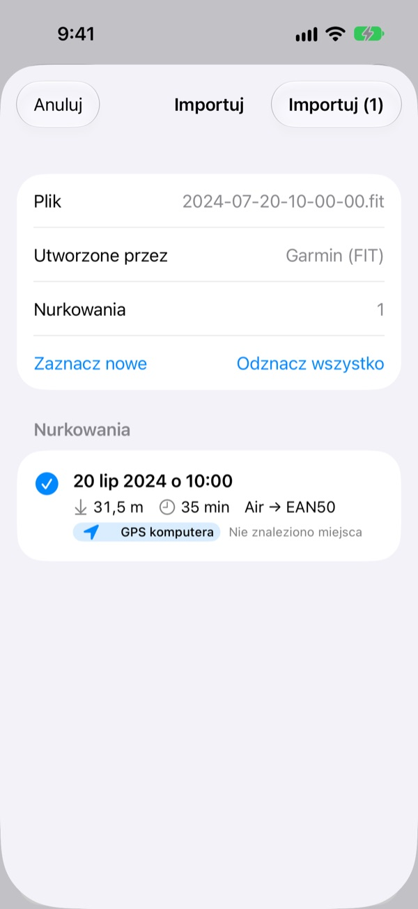
Pobieranie nurkowań z komputera
Najpierw przełącz komputer nurkowy w tryb Bluetooth. W Shearwater: Menu → Bluetooth. Pozostaje w nim około dwóch minut. Pobierane są tylko nurkowania nowsze niż ostatnie pobranie.
| Zadanie | iPhone i iPad | Mac |
|---|---|---|
| Otwórz | Logbook → Pobierz nurkowania | Plik → Pobierz z komputera nurkowego… (⇧⌘D) |
| Połącz | Bluetooth. Wybierz swój komputer w sekcji W pobliżu; za pierwszym razem wpisz PIN pokazany na jego ekranie. | Wybierz Bluetooth lub Kabel USB. W przypadku kabla wybierz model komputera i jego port oraz wykonaj kroki z sekcji Zanim zaczniesz. |
| Zakończ | Odznacz nurkowania, których nie chcesz, a potem Zachowaj. Odznaczone nurkowania zostają na komputerze i zostaną zaproponowane ponownie następnym razem. | Pobierz. |
Pytanie o zegar. Przy pierwszym pobraniu z każdego komputera aplikacja pyta: Na jaką strefę jest ustawiony zegar komputera? Większość komputerów zapisuje czas lokalny bez strefy czasowej, więc dzięki temu godziny nurkowań są prawidłowe, gdy podróżujesz. Odpowiedź jest zapamiętywana dla tego komputera.
Po wybraniu nurkowań możesz przejść przez nie po kolei, aby ustawić miejsce i gazy, albo wybrać Dokończ później: czekają wtedy w sekcji Do potwierdzenia.
Usunięto nurkowanie i chcesz je odzyskać? Włącz Pobierz wszystkie nurkowania z komputera. Trwa to dłużej; nurkowania, które już są w logbooku, są pomijane.

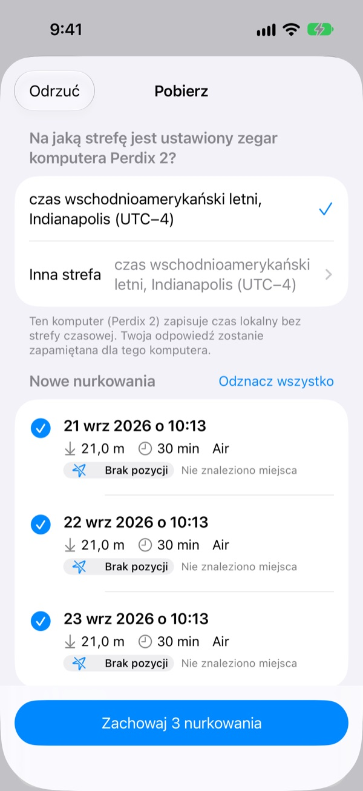
Shearwater Predator i Petrel 1
Używają starszego Bluetooth (Bluetooth Classic), z którego iPhone’y i iPady nie mogą korzystać. Na Macu najpierw sparuj komputer w Ustawienia systemowe → Bluetooth, a potem w oknie pobierania wybierz Kabel USB: jego port może pojawić się na liście. Przełącz komputer w tryb wysyłania przez Bluetooth i wybierz Pobierz. Nie zostało to jeszcze wypróbowane na prawdziwym Predatorze ani Petrelu 1, więc wyślij log pobierania niezależnie od tego, czy zadziała. Na iPhonie zamiast tego zaimportuj ich nurkowania z Shearwater Cloud lub z pliku UDDF.
Obsługiwane komputery
Thermocline pobiera dane za pomocą libdivecomputer – biblioteki open source, z której korzysta wiele logbooków. Zna ona kilkaset modeli większości producentów. Aby sprawdzić swój, otwórz ekran pobierania i wybierz Obsługiwane komputery; przy każdym widać, czy działa na iPhonie i iPadzie, czy wymaga Maca.
| Połączenie | Gdzie działa | Dotychczas wypróbowane |
|---|---|---|
| Bluetooth LE | iPhone, iPad i Mac | Shearwater Perdix i Perdix 2. Inne modele powinny działać: daj nam znać. |
| Kabel USB lub szeregowy | Tylko Mac | Przygotowane, jeszcze niewypróbowane na prawdziwym sprzęcie. |
| Bluetooth Classic (Predator, Petrel 1 i inne starsze modele) | Tylko Mac, sparowany jako port szeregowy (jak) | Jeszcze niewypróbowane. |
| Garmin Descent (pliki .fit) | Import na iPhonie, iPadzie i Macu (jak) | Nurkowania z Descent, w tym nurkowania w dryfie. |
Masz komputer, którego jeszcze nie wypróbowaliśmy? Pomóż nam go przetestować.
Potwierdź miejsce i gazy
Nurkowania, którym wciąż brakuje miejsca nurkowego lub potwierdzonych gazów, czekają w sekcji Do potwierdzenia. Nic nie blokuje ich zapisania; uzupełnij je, kiedy zechcesz.
| Zadanie | iPhone i iPad | Mac |
|---|---|---|
| Znajdź je | Na górze karty Logbook, w sekcji Do potwierdzenia. | Idź → Do potwierdzenia (⌘2) |
| Potwierdź | Otwórz nurkowanie, potem Wybierz miejsce i stuknij Tak, te gazy są prawidłowe (lub Popraw gaz…). | Baner przy każdym nurkowaniu proponuje Potwierdź miejsce i gazy…, Wybierz miejsce… lub Potwierdź gazy…. |
Thermocline podpowiada miejsce na podstawie pozycji nurkowania: najpierw Twoje własne miejsca, potem wbudowane listy ponad 76 000 miejsc nurkowych i wraków, które działają offline.

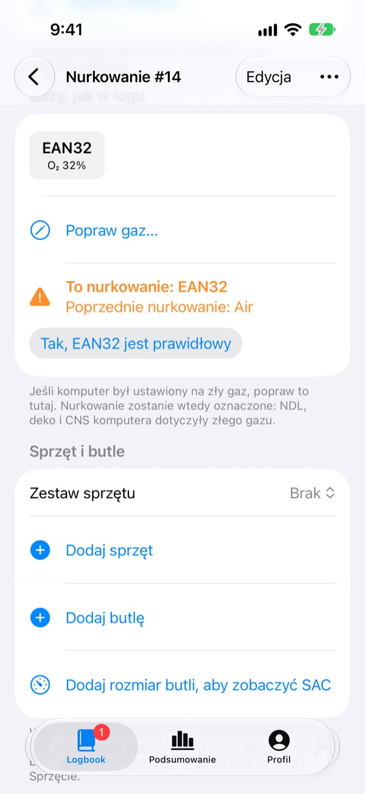
Odczytywanie nurkowania
| Zadanie | iPhone i iPad | Mac |
|---|---|---|
| Odczytaj dowolną chwilę | Przeciągnij po wykresie. | Wskaż wykres. |
| Zapisz nurkowanie ręcznie | Logbook → Zapisz ręcznie | ⌘N |
- Wartości bezpieczeństwa są na stałym pasku u góry każdego nurkowania, zawsze w tym samym miejscu.
- Profil: etykiety pod wykresem pokazują lub ukrywają Butla, ppO₂, NDL, SAC, Temp., CNS i Wynurzanie – jako paski Osobno lub jeden wykres Nałożone. Etykietę dostaje tylko to, co nurkowanie zapisało. NDL pochodzi z komputera i znika podczas deko, gdzie czerwony pas pokazuje przystanki. Na wąskim iPhonie etykiety zostają w jednym wierszu i przewijają się w bok. Wypróbuj na stronie głównej.
- Rebreathery: z każdego komputera lub pliku, który je zapisuje, pasek ppO₂ pokazuje setpoint razem z ppO₂ „Voted”, czyli wartością, którą komputer wybiera na podstawie ogniw (oraz każdym ogniwem, jeśli zostało zapisane), a odczyt podaje setpoint w danej chwili. Przejście z diluentu na dowolny inny gaz jest oznaczane jako bailout.
- Zużycie gazu: stuknij lub kliknij Jak? obok wartości SAC, aby zobaczyć wszystkie dane: butlę, jej pojemność wodną, ciśnienia, temperaturę i poprawkę na gaz rzeczywisty.
- Edycja: możesz edytować każde nurkowanie. Poprawka zachowuje oryginalny odczyt z komputera.
- Balast: pierwsze stuknięcie + ustawia Bez balastu – dla nurkowania bez żadnego balastu. Następnie stuknij −, aby wyczyścić tę wartość.
- Linki w notatkach: linki internetowe w notatkach nurkowania można stukać lub klikać. Gdy skończysz pisać, stuknij Gotowe nad klawiaturą: wtedy linki się pokazują, a link do YouTube lub Vimeo dostaje pod notatkami przycisk Dodaj … do linków do filmów. Aby znowu pisać w notatkach, wybierz Edytuj notatki.

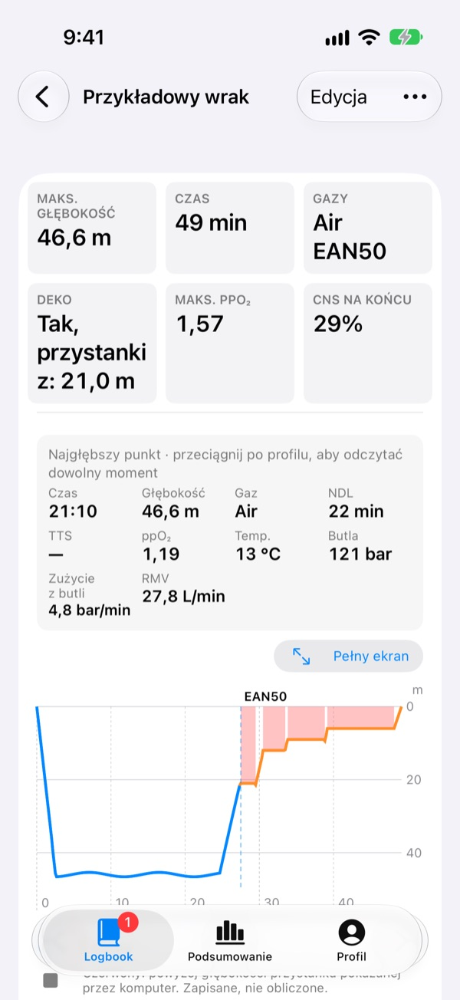

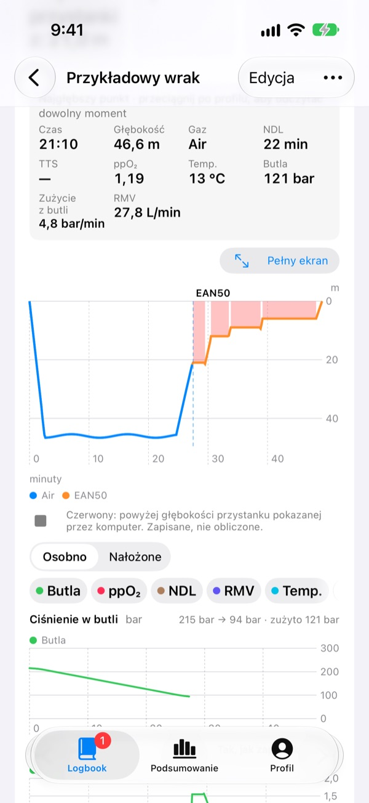


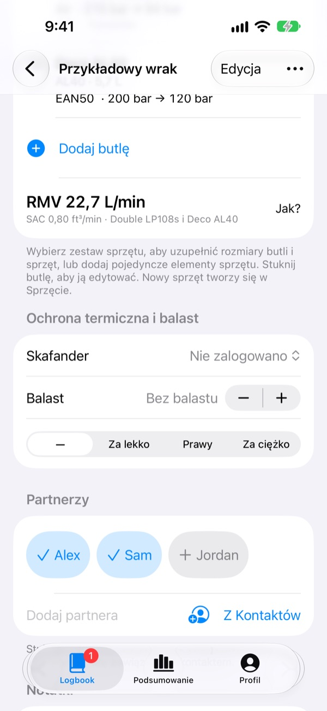

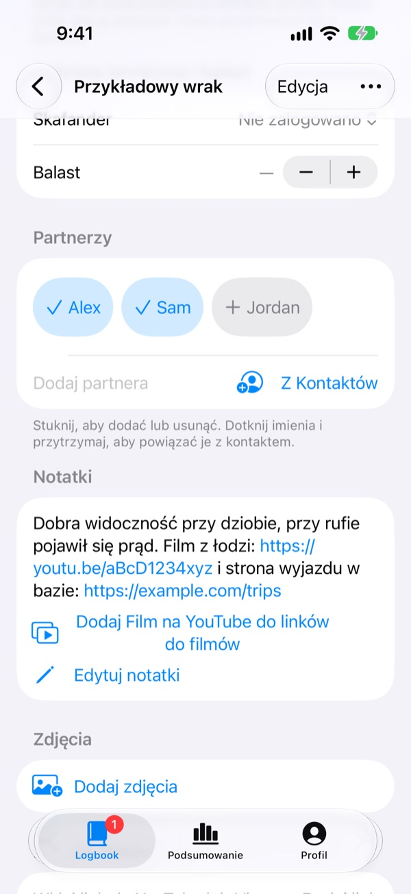

Miejsca, pozycje i Apple Watch
| Zadanie | iPhone i iPad | Mac |
|---|---|---|
| Dodaj miejsce | Profil → Miejsca, a potem przycisk dodawania: Znajdź lub nazwij miejsce albo Zaznacz punkt tutaj (GPS). | Idź → Miejsca (⌘4), a potem Dodaj miejsce… |
| Zobacz wszystkie miejsca z list | Profil → Miejsca → Mapa, a potem przycisk globusa albo zsuń palce, aby maksymalnie oddalić mapę. Wraki są pomarańczowe, rafy i miejsca nurkowe niebieskie, a Twoje własne miejsca to czerwone flagi. | Miejsca, a potem Pokaż globus na pasku narzędzi albo oddal maksymalnie. |
| Znajdź pozycję | Miejsce bez pozycji proponuje Znajdź pozycję: sprawdź podpowiedź na mapie, wpisz współrzędne lub upuść pinezkę. | Znajdź pozycje… przechodzi po kolei przez każde miejsce bez pozycji. |
Apple Watch: zaznacz punkt na powierzchni, a będzie czekał na iPhonie w sekcji Do potwierdzenia. Zobacz Apple Watch.
Pozycje miejsc służą do prowadzenia logbooka, a nie do nawigacji.

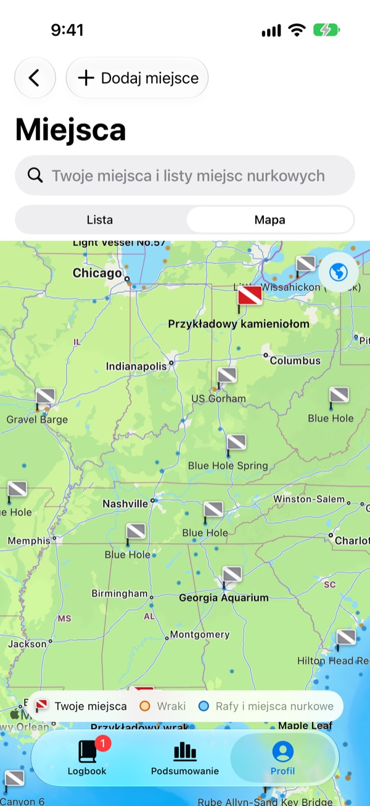
Apple Watch
Aplikacja na zegarek robi jedną rzecz: zaznacza, gdzie jesteś na powierzchni, aby łatwo było zapisać miejsce nurkowania. Nie zapisuje nurkowań; te pochodzą z Twojego komputera nurkowego. Wymaga watchOS 11 lub nowszego oraz iPhone’a z Thermocline.
| Zadanie | Apple Watch | iPhone |
|---|---|---|
| Instalacja | Jest dołączona do aplikacji na iPhone’a. Jeśli nie ma jej na zegarku, otwórz aplikację Watch na iPhonie, znajdź Thermocline w sekcji Dostępne aplikacje i stuknij Instaluj. Za pierwszym razem zezwól Thermocline na zegarku na dostęp do lokalizacji. | |
| Zaznacz punkt | Na powierzchni, nad miejscem, otwórz Thermocline. Poczekaj na Dobry fix, a potem stuknij Zaznacz punkt. Zegarek stuknie Cię w nadgarstek, gdy punkt zostanie zapisany. | Punkt dociera sam. Jeśli iPhone jest poza zasięgiem, punkt zostanie wysłany, gdy znów będą razem. |
| Nazwij go | Opcjonalnie. Stuknij Dodaj nazwę po zaznaczeniu albo później w Zaznaczone i powiedz, napisz odręcznie lub wpisz ją, na przykład „dziób wraku”. Zapisuje się, gdy skończysz. | Nazwa jest proponowana jako nazwa nowego miejsca. Możesz jej użyć lub wybrać inne miejsce. |
| Potwierdź go | Na zegarku nie trzeba nic robić. | Logbook → Do potwierdzenia. Gdy iPhone jest online, wyszukuje punkt, podpowiada najbliższe znane miejsce i pokazuje nurkowanie, do którego najprawdopodobniej należy. Potwierdź go lub odrzuć. |
| Sprawdź, czy został wysłany | Zaznaczone pokazuje każdy punkt ze stanem Wysłano do iPhone’a lub Czeka na wysłanie do iPhone’a oraz mapę. Punkt znika z zegarka, gdy zostanie potwierdzony lub odrzucony na iPhonie. | Po potwierdzeniu miejsce synchronizuje się z innymi urządzeniami jak każde inne. |

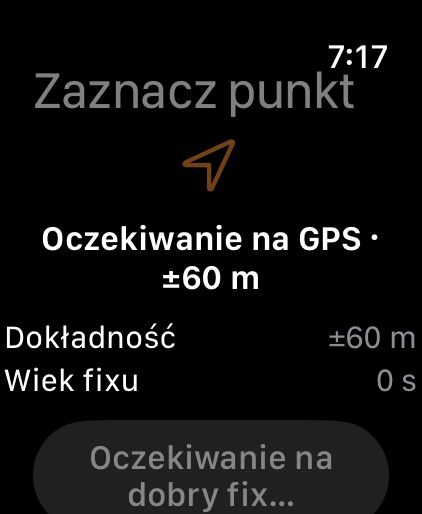

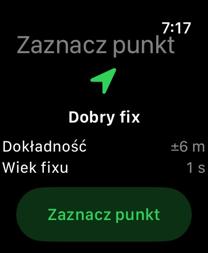

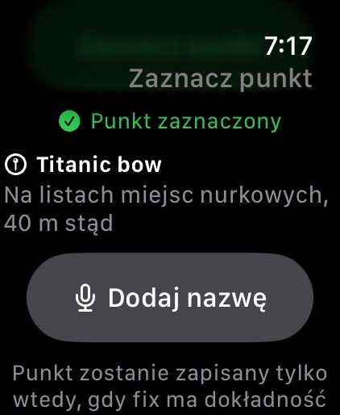

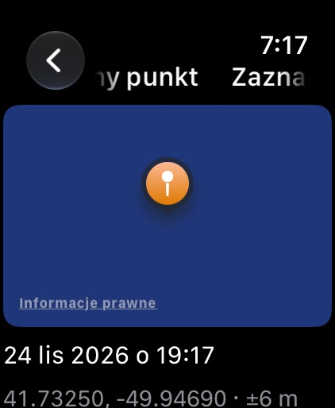
Zegarek zapisuje punkt tylko z fixu o dokładności do ±30 m, nie starszego niż 30 sekund, i pomija starą pozycję z pamięci podręcznej. Zaznaczaj punkt na powierzchni, nie pod wodą.
Pozycje miejsc służą do prowadzenia logbooka, a nie do nawigacji.
Sprzęt i butle
| Zadanie | iPhone i iPad | Mac |
|---|---|---|
| Otwórz Sprzęt | Profil → Sprzęt | Idź → Sprzęt |
- Przy butli pole Model otwiera katalog butli: szukaj według producenta lub modelu (na przykład „PST LP104”), aby uzupełnić jej katalogowe rozmiary, albo wpisz własne wartości.
- Zaznacz Twinset (para z manifoldem) dla twinsetu.
- Butla stalowa z wybitym znakiem +: włącz Oznaczenie plus, jeśli ostatnia próba ciśnieniowa utrzymała +. Jest wtedy pokazywana na przykład jako 2400+. Ten przełącznik pojawia się, gdy rozmiary butli są pokazywane w stopach sześciennych.
- Butle w każdym nurkowaniu są w sekcji gazów nurkowania (Dodaj butlę, Zestaw sprzętu).
Scalanie i łączenie nurkowań
- Scal służy do jednego nurkowania zapisanego przez dwa komputery. Oba zapisy są zachowywane i możesz przełączać się między nimi na wykresie.
- Połącz służy do jednego nurkowania podzielonego na dwa przez krótkie wynurzenie.
- Thermocline nigdy nie robi żadnej z tych rzeczy sam. Gdy wykryje prawdopodobną parę, baner u góry logbooka proponuje, aby je Przejrzeć.
| Zadanie | iPhone i iPad | Mac |
|---|---|---|
| Zrób to sam | Stuknij Wybierz, wybierz dwa nurkowania, a potem Scal lub Połącz. | Zaznacz dwa nurkowania i kliknij prawym przyciskiem: Scal te nurkowania… lub Połącz te nurkowania… |
| Zmiana zdania | Cofnij od razu albo w dowolnym momencie Rozdziel te nurkowania w nurkowaniu. | |
Zdjęcia i linki do filmów
- Dodaj zdjęcia w nurkowaniu kopiuje je z Twojej biblioteki do logbooka.
- Aby oszczędzać miejsce w iCloud, włącz Synchronizacja → Oszczędzaj miejsce w iCloud przy zdjęciach z nurkowań na każdym urządzeniu. Zdjęcia są wtedy powiązane ze Zdjęciami w iCloud zamiast kopiowane, a do nurkowań można dodawać filmy z biblioteki. Thermocline prosi o dostęp do Zdjęć tylko wtedy, gdy to włączysz.
- Linki do filmów: wklej link do YouTube lub Vimeo pod zdjęciami nurkowania. Zachowywany jest tylko link. Link, który już jest w notatkach, można dodać stamtąd (zobacz Odczytywanie nurkowania).
- Ten sam film w kilku nurkowaniach: zaznacz nurkowania (na iPhonie najpierw stuknij Wybierz), wybierz Edytuj … nurkowania… i dodaj link w sekcji Linki do filmów. Zostanie dodany do każdego zaznaczonego nurkowania, a linki, które już mają, zostają zachowane.
Podsumowanie i zużycie gazu
Karta Podsumowanie (Podsumowanie na pasku bocznym Maca) liczy Twój logbook: nurkowania w roku i w miesiącu, głębokości, gazy, rekordy, gdzie nurkujesz oraz Twoje najczęstsze miejsce i partnera. Wybierz zakres na górze, na przykład jeden rok, i stuknij dowolną liczbę lub słupek, aby zobaczyć nurkowania, które się za nimi kryją.
- Oddychanie pokazuje Twój SAC i RMV ze wszystkich nurkowań w zakresie, które mają rozmiar butli oraz ciśnienie początkowe i końcowe, ważone czasem i głębokością. Stuknij, aby zobaczyć, które nurkowania zostały uwzględnione.
- Niektóre zaimportowane nurkowania nie mają rozmiaru butli, więc Oddychanie może być na początku puste (zobacz Którego pliku MacDive użyć). Ustaw butle w swoich nurkowaniach, w Sprzęcie lub w każdym nurkowaniu, a się wypełni.

Synchronizuj z iCloud
| Zadanie | iPhone i iPad | Mac |
|---|---|---|
| Włącz synchronizację | Profil → Synchronizacja | Thermocline → Ustawienia → Synchronizacja |
Każde urządzenie zalogowane na to samo Konto Apple korzysta wtedy z jednego logbooka, przechowywanego w Twoim własnym prywatnym iCloud. Zmiany wprowadzone offline czekają na urządzeniu i są wysyłane, gdy wróci ono do sieci.
Sekcja Synchronizacja pokazuje stan, wszystko, co Oczekuje na wysłanie, oraz to, czy to urządzenie i Twoje pozostałe są zgodne. Synchronizuj teraz sprawdza od razu.

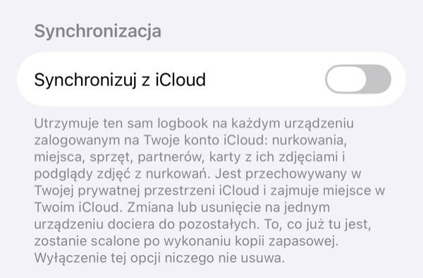
Eksport, punkty przywracania i wymazywanie
| Zadanie | iPhone i iPad | Mac |
|---|---|---|
| Eksport | Profil → Twoje dane | Menu Plik |
| Punkty przywracania | Profil → Twoje dane → Punkty przywracania | Ustawienia → Twoje dane → Punkty przywracania |
- Eksport: UDDF to pełny eksport i Twoja droga wyjścia do dowolnego logbooka. Dostępne są też: arkusz kalkulacyjny (CSV), MacDive XML, zakładki do pomiarów jaskini (CSV) i podsumowanie doświadczenia (tekst) na potrzeby wymagań kursowych.
- Punkty przywracania: punkt jest zapisywany przed włączeniem synchronizacji, przed dużym importem, scaleniem, połączeniem, wymazaniem i przed każdym usunięciem. Przywracanie najpierw zapisuje Twój bieżący logbook jako punkt przywracania, więc można je cofnąć.
- Wymazywanie: Wymaż logbook… proponuje najpierw eksport. Przy włączonej synchronizacji Twoje pozostałe urządzenia zrobią to samo.

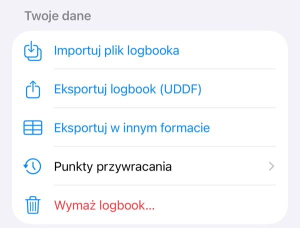
Nadal coś nie działa?
Zobacz Rozwiązywanie problemów albo wyślij opinię z TestFlight lub na adres brian@616labs.net.